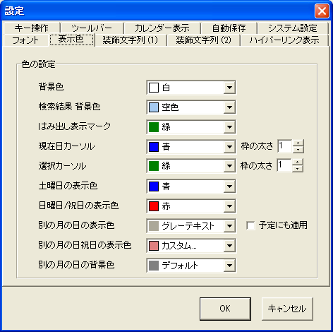

[表示色]タブでは，カレンダーの背景色や文字の表示色の指定を行なうことができます．
| 名称 | 影響する場所 |
|---|---|
| 背景色 | カレンダーの各日付の背景色です． |
| 検索結果 背景色 | キーワード検索でマッチしたキーワードを含む日の背景を着色するための色です． |
| はみ出し表示マーク | セルからはみ出した文字列が存在することを示すマークの色です． |
| 現在日カーソル | 現在の日時に対応する日に表示される枠の色です． 右側にある「枠の太さ」を変更することで，カーソル枠線の太さを変更することができます． |
| 選択カーソル | マウスクリック・カーソルキーによって移動されるカーソルの色です． 右側にある「枠の太さ」を変更することで，カーソル枠線の太さを変更することができます． |
| 土曜日の表示色 | 土曜日の曜日名（一番上の行の「土」の字）と土曜日の日付の数字の色です．標準では青が指定されています． |
| 日曜日/祝日の表示色 | 日祝日の「日」の字，日付の数字の色です．標準では赤が指定されています． |
| 別の月の日の表示色 | 他の月（先月・翌月）の日の数字を書く色です．標準では灰色が指定されています． 右側にある「予定にも適用」にチェックを付けると， 日付の数字だけでなく，予定データも同じ色で表示します． |
| 別の月の日祝日の表示色 | 他の月（先月・翌月）の日祝日を書く色です．標準では赤みがかった灰色が指定されています． |
| 別の月の日の背景色 | 他の月（先月・翌月）の日付の背景色です．セルに手で着色した色よりもこの背景色が優先されます．「デフォルト」を選ぶと，色の変更は行われません． |